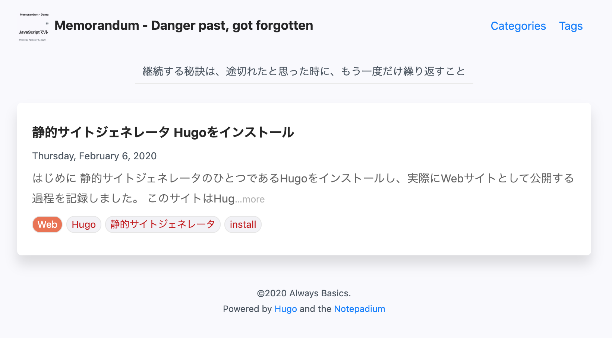

はじめに
静的サイトジェネレータのひとつであるHugoをインストールし、実際にWebサイトとして公開する過程を記録しました。
このサイトはHugoを使って作成されています。
静的サイトジェネレータ
ところで静的サイトジェネレータってなに？
静的サイトジェネレータなんて聞き覚えのない言葉かも知れません。私も聞き覚えは無かったのですがはてなとかQiitaがMarkdownで記事を書けるのを見ていて、自分のサイトでも同じことをしてみようかなと思い一瞬自作が頭をよぎったところで、でも冷静に考えてみるとMarkdownをHTMLに変換するライブラリ、エディタの拡張(プラグイン)はいくつもあるわけで、誰かが仕組みを作ってくれているのでは？と思い「静的 サイト 生成」をキーワードに検索して存在をしった次第です。
静的サイトジェネレータの使い方
静的サイトジェネレータとは、文字通り静的サイトを作るものなので、Webサイトとして公開するには、出来上がったファイルをいわゆるApacheやNginxといったWebサーバーが見ているディレクトリにコピーすれば良いだけです。
雑な表現で流れをつかむとしたら、以下の1〜3の手順を繰り返すことでブログの運用をするというイメージです。
- 静的サイトジェネレータをご自身のパソコンにインストール(これは最初の1回目だけ)
- Markdownで記事を書く
- ジェネレートする
- アップロードする
また作成されるものが静的であるということは、PHPやPython、Rubyなどの言語環境はもとよりデータベースなども不要なことから、ご自身でサーバーを借り受けて運用する必要もなく、例えばGitHub Pagesのように無料のサービスを使ってWebサイトを公開することも可能です。
静的サイトジェネレータ Hugo
静的サイトジェネレータが何者かは分かりました。ではHugoとは何者でしょうか？ HugoとはGo言語というGoogleが開発したプログラミング言語で作られた静的サイトジェネレータです。 安心してください。Goについてはまったく知る必要はありません。Goをインストールするということもありません。 知って頂くのは嬉しいですが、知らなくてもHugoに関しては使いこなせます。
静的サイトジェネレータはHugo以外にもいくつも存在しています。できることは似たり寄ったり。というかどのツールもゴールは静的ページの生成なので、そんなに劇的に違うと事件ですよね？この記事では比較はいたしませんが、ひとまずHugoを押しておきます。
Hugoのインストール
前提
静的サイトジェネレータHugoをインストールするための前提ではありません。この記事が例示するのが、以下のOS,バージョンというだけです。
macOS 10.14.6
実際には、Windows、Mac、Linuxと事実上この記事の読者全ての方がインストール可能かと思います。
手順1 Hugoのインストール
Hugoのインストール手順はとても簡単です。Homebrewを使えば一発インストールが可能です。
brew install hugo
長々と処理が流れて行きますが、しばらく放置しておけば良いです。
もしHomeBrewがまだインストールされていない場合は、こちらを参考にしてインストールしてください。 とはいっても、以下のコマンドを1発実行するだけだと思います。
/usr/bin/ruby -e "$(curl -fsSL https://raw.githubusercontent.com/Homebrew/install/master/install)"
手順2 新規サイトの作成
Hugoをインストールすると、hugoコマンドが使えるようになります。 ここでは、memorandum.always-basics.comという新規サイトを作成するべく、以下のコマンドを実行します。
hugo new site memorandum.always-basics.com
MacBookPro-2:git $ hugo new site memorandum.always-basics.com
Congratulations! Your new Hugo site is created in /Users/user/git/memorandum.always-basics.com.
Just a few more steps and you're ready to go:
1. Download a theme into the same-named folder.
Choose a theme from https://themes.gohugo.io/ or
create your own with the "hugo new theme <THEMENAME>" command.
2. Perhaps you want to add some content. You can add single files
with "hugo new <SECTIONNAME>/<FILENAME>.<FORMAT>".
3. Start the built-in live server via "hugo server".
Visit https://gohugo.io/ for quickstart guide and full documentation.
MacBookPro-2:git $
これにてサイトのひな形が完成しました。
メッセージを意訳してみます。
おめでとう！ /Users/user/git/memorandum.always-basics.com にファイル作ったぜ！
1. 同名のフォルダ内にテーマをダウンロードしよう
https://themes.gohugo.io/ からテーマをダウンロードするか
またはhugo new theme コマンドで新しいテーマを作ろう
2. たぶん、いくつかのコンテンツを作成したいだろうが、そのときには
hugo new セクション名/ファイル名.フォーマット で出来るよ
3. ビルトインサーバー(hugo serverコマンド)を起動しよう
つづきはWeb(https://gohugo.io/)で。
まぁ、大体こんな感じです。
確認
Hugoは果たして無事にインストールできているのかを確認する意味でも、出来たファイルを見てみます。
cd memorandum.always-basics.com
ls -l
MacBookPro-2:memorandum.always-basics.com $ ll
total 8
drwxr-xr-x 3 user staff 96 2 6 11:42 archetypes
-rw-r--r-- 1 user staff 82 2 6 11:42 config.toml
drwxr-xr-x 2 user staff 64 2 6 11:42 content
drwxr-xr-x 2 user staff 64 2 6 11:42 data
drwxr-xr-x 2 user staff 64 2 6 11:42 layouts
drwxr-xr-x 2 user staff 64 2 6 11:42 static
drwxr-xr-x 2 user staff 64 2 6 11:42 themes
MacBookPro-2:memorandum.always-basics.com $
なにやら？出来ているようですね。
手順4 テーマのインストール
静的サイトジェネレータでサイトを作成するということは、ファイルリソースはgitで管理するのが半ば当たり前？それともgitってなぁに？ この投稿を読んで下さる方がどちらのお立場なのかは分かりませんが、ここではgitで管理する前提で書きます。
なお、Hugoにgitが必須ということではありません。テーマをダウンロードしてthemesディレクトリに配置することでも問題ありません。 おそらく各テーマのインストール手順の説明で、gitを使う場合と使わない場合の説明があると思います。
当サイトでは一つ一つの記事の繋がりは薄く、カテゴリーやタグによってなんとなく分類されるメモを残していくのが趣旨なので、hugo-notepadiumというテーマを選択しました。
git init
git submodule add https://github.com/cntrump/hugo-notepadium.git themes/hugo-notepadium
MacBookPro-2:memorandum.always-basics.com $ git init
Initialized empty Git repository in /Users/user/git/memorandum.always-basics.com/.git/
MacBookPro-2:memorandum.always-basics.com $ git submodule add https://github.com/cntrump/hugo-notepadium.git themes/hugo-notepadium
Cloning into '/Users/user/git/memorandum.always-basics.com/themes/hugo-notepadium'...
remote: Enumerating objects: 26, done.
remote: Counting objects: 100% (26/26), done.
remote: Compressing objects: 100% (20/20), done.
remote: Total 7288 (delta 7), reused 16 (delta 5), pack-reused 7262
Receiving objects: 100% (7288/7288), 13.94 MiB | 2.82 MiB/s, done.
Resolving deltas: 100% (3970/3970), done.
MacBookPro-2:memorandum.always-basics.com $
もしもgitをインストールしていない方でいまインストールされる方には、ここではHomebrewでのインストールを記載しておきます。 gitに関してはXcodeあるいはCommand Line Tools、またはgitが提供するインストーラーなど様々なインストール方法がありますが、 どれでも構いませんので適宜お調べの上インストールください。
brew install git
手順5 config.tomlを編集
Hugoの設定ファイルであるconfig.tomlを編集します。 サイトの構成を変える場合には編集することがあるかと思いますが、最初に編集した内容で問題が無ければ、記事を追加していく通常の運用のタイミングでは、変更することは無いと思います。
ひとまず、動作確認が出来るように以下を設定しました。ご自身の環境に合わせて変更して下さい。
baseURL = "http://memorandum.always-basics.com/"
languageCode = "en-us"
title = "memorandum - Danger past, got forgotten"
theme = "hugo-notepadium"
hasCJKLanguage = "true"
copyright = "©2020 Always Basics."
それぞれ以下のような設定を意味しています。
| 項目名 | 意味 |
|---|---|
| baseURL | サイトを公開するURL |
| languageCode | RSSフィードで提供される文字コード |
| title | サイトタイトル |
| theme | 利用しているテーマ |
| hasCJKLanguage | コンテンツの日本語、中国語、韓国語の自動識別 |
| copyright | コピーライト表示 |
手順6 テーマを有効にする
すでにHugoのテーマとして1つをインストールしたわけですが、そのテーマを有効にしておきます。
hugo -t hugo-notepadium
手順7 1つ目の記事を作成
静的ジェネレーター Hugoをインストールしてからようやく1つ目の記事の作成です。
hugo new post/welcome.md
これでcontent/post/welcome.mdファイルが作られたので、それを編集して記念すべき1つ目のページを生成してみましょう。
生成されたファイルを開くと、—で囲われているヘッダー部分があることが分かります。これはフロントマター(front matter)と呼ばれている情報で、キーと値の組み合わせがコロンで区切られています。
---
title: "Welcome"
date: 2020-02-06T13:57:04+09:00
draft: false
---
ここでは実際に動作を確認したいのでdraftをfalseにしています。
動作確認
静的サイトジェネレータ Hugoをインストールしてから、ようやくこのときが来ました。 動作確認をしてみます。
hugo server -w
最後のwは、更新があったら自動的にブラウザの表示がリロードされるというものです。便利なのでぜぴ。
http://localhost:1313/ にアクセスしてみて下さい。

無事に画面が表示されましたでしょうか。 また、http://localhost:1313/post/welcome/ にもアクセスしてみて下さい。 こちらが中身は空ですが記念すべき1つ目の投稿です。せっかくですので中身を適当に追記して、自動で更新される所を体験してみてはどうでしょうか。
なお、先ほどテーマを設定しましたが、実際にはサーバを起動するタイミングでも指定は出来ます。
hugo server -t hugo-uno -w
静的サイトジェネレータ Hugoで作成したサイトを公開
ここまではローカルで動作させているだけなので、実際にインターネット上に公開して動作させてみたいと思います。
静的サイトをジェネレートする
いよいよ静的サイトジェネレータが静的サイトをジェネレートする瞬間です！
hugo
ちょっと拍子抜けですかね？ここでもテーマを切り替えて(指定して)の実行が可能です。 できあがり品は、publicディレクトリの中にあります。これをWebサーバーで公開するだけです。
このWebサーバーで公開するところは、それぞれの環境によって異なる部分ですので割愛いたします。 (時間が出来たらGitHub Pagesで公開する流れをやってみたいと思います。)
1つだけ注意点があるとすれば、config.tomlが存在するディレクトリで実行して下さい。
もう少し構成してみる
静的サイトジェネレータ Hugoをインストールして実質中身ゼロの記事を1つだけ投稿した状態になっていますので、もうもう少しきちんと構成してみたいと思います。
ただし、ここから先は選択したテーマに依存する部分があると思います。もしインストールを経験するためだけにこの記事の指示に従って来た方は、ここでお別れしてご自身の道を進まれるのも一案だと思います。もちろん、最後までお付き合いいただいた上で、お好みのテーマに切り替えていただくというのもアリです！
config.tomlの編集
ほとんどhttps://themes.gohugo.io/hugo-notepadium/ に解説の通りです。
[markup.highlight]
codeFences = true
noClasses = false
[markup.goldmark.renderer]
unsafe = true # enable raw HTML in Markdown
[params]
style = "auto" # default: auto. light: light theme, dark: dark theme, auto: based on system.
dateFormat = "Monday, January 2, 2006" # if unset, default is "2006-01-02"
slogan = "継続する秘訣は、途切れたと思った時に、もう一度だけ繰り返すこと"
license = "" # CC License
logo = "/images/logo.jpg"
[params.nav]
showCategories = true # /categories/
showTags = true # /tags/
[params.comments]
enable = true # En/Disable comments globally, default: false. You can always enable comments on per page.
[params.syntax]
use = "hljs" # 1. prismjs 2. hljs 3. none
theme = "dracula"
darkTheme = "xcode-dark" # apply this theme in dark mode
一つだけ、これはどうしたら良いのか？と調べたのは、logoのイメージファイルの配置先です。 Hugoにはstaticという名前のディレクトリが作られており、ここに画像ファイルなどを配置するようです。パスはそこをTOPにした状態で記載します。
一つ一つの投稿の中で画像を貼り付けるときも同じことです。
記事を追加
1つ本稿を追加しました.
動作確認


静的サイトジェネレータ Hugoをインストールしてみて
静的サイトジェネレータ Hugoのインストールはとてもとても簡単な作業で、十分なクオリティのWebサイトが手に入ることはもちろんのこと、手元で編集作業をしているときも、実際のWebサイトの動作もとても軽快でストレスフリーです。
Wordpressでのブログ運営を念頭に置くと、コメント欄が必要だったり、認証云々、それからSNS連携やSEO対策など、いくつかの要素について対応していない状況にあります。
そのあたりは、おいおい充実させていき、こちらにもメモを残したいと思います。
ですが、求めているものに対してWordpressは壮大すぎるし、用意しなければならない物が多すぎるとお感じの方には十分選択肢になり得ると思います。 みなさんもぜひ、静的サイトジェネレータの世界へ足を踏み入れてみませんか？
そして、Hugoを是非その候補のの一つに。
comments powered by Disqus